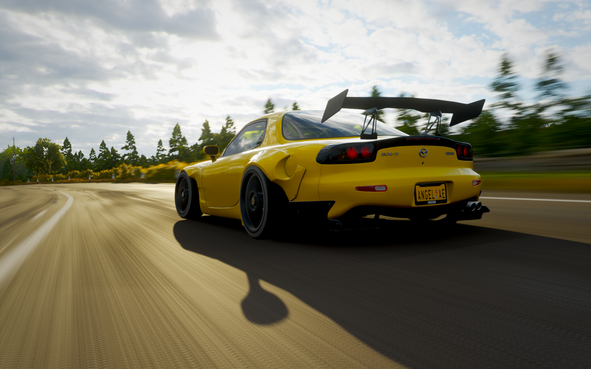
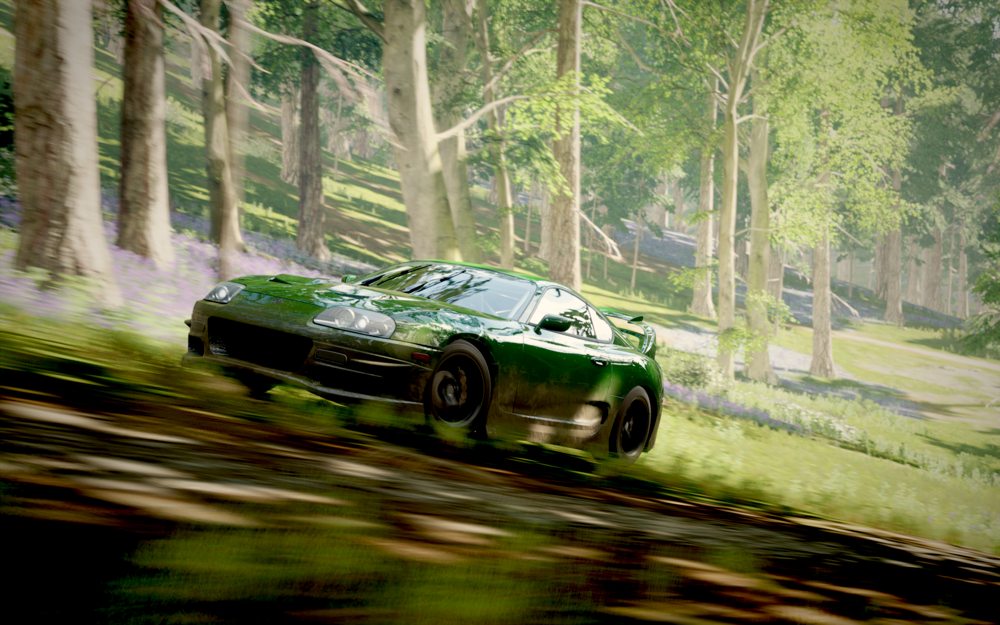
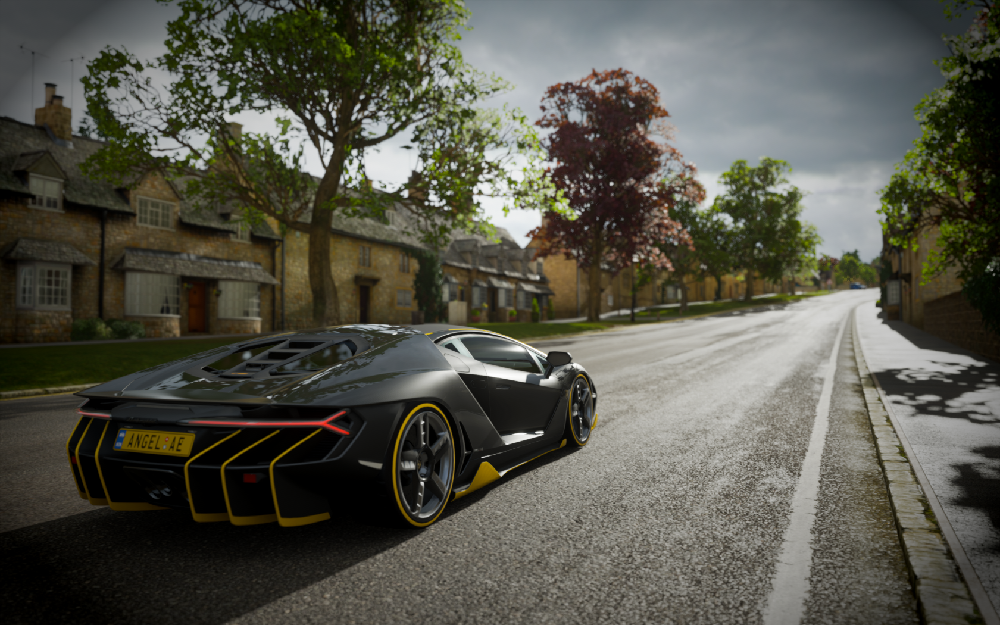
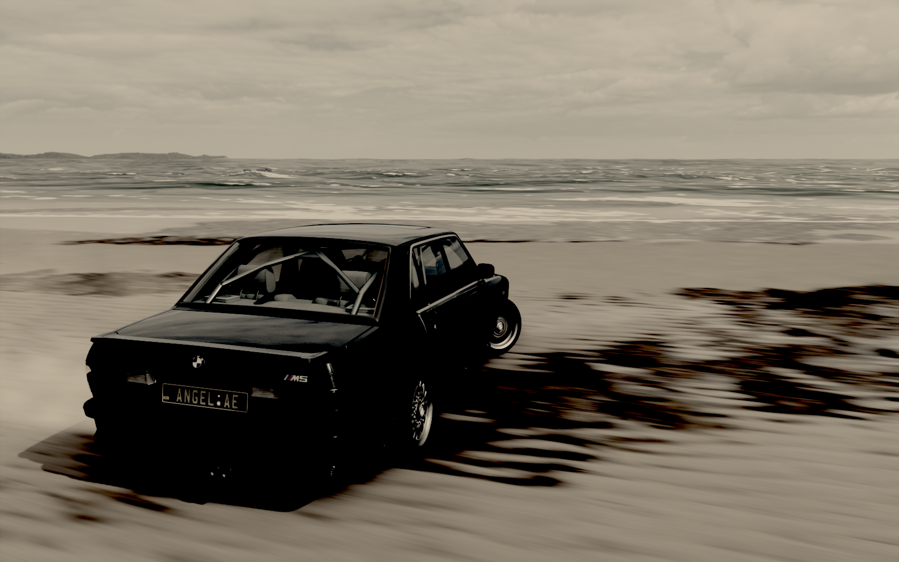
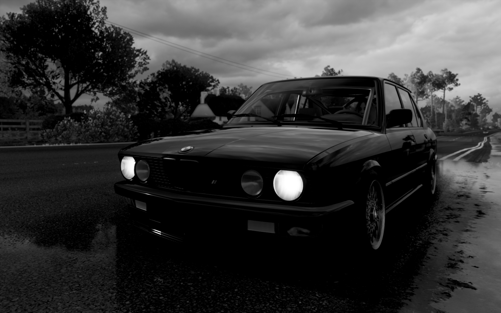
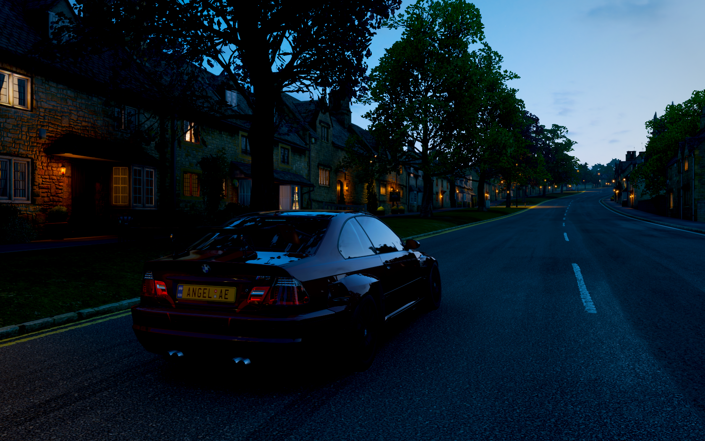

PracticWork№3
Forza Horizon 4






CAPABILITIES
Полезная статья, которая помогла мне сделать это практическое задание, рекомендую
Ссылка на сайт, с которого мы должны были "срисовывать" дизайн, но у меня не получилось сделать даже эту ссылку
Отличнейшая статья, которая по сути дала мне старт для этой лабы, она предоставила скелет, с которым я начал работу
Это тоже очень важный сайт, поможет Вам узнать погоду в Чаплинке
А это мой инстаграм, сам инстаграм далеко не самое худшее приложение, а вот его большая часть хабитатов делают из него помойку
Тут ВК.ком, в разы лучше инстаграма, фейсбука, одноклассников и прочьего помойного ведра, но спасибо законопроекту, запрещающему рос.соцсети.